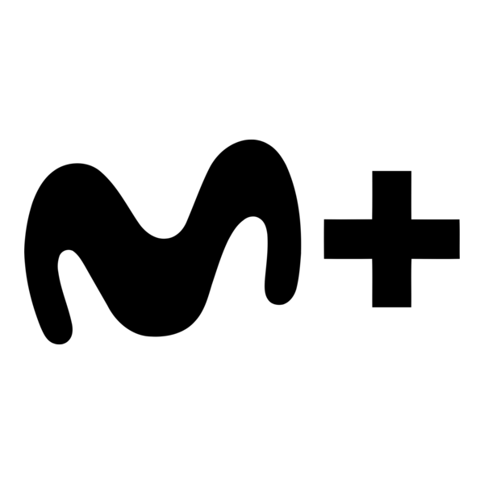
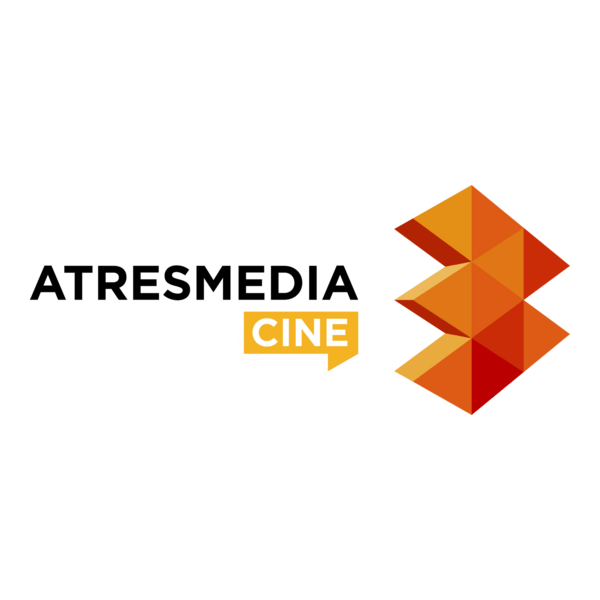

PRODUCCIÓN AUDIOVISUAL · ESPAÑA
IDEAS QUE
ENTRAN EN ÓRBITA.
Una productora audiovisual preparada para conectar creatividad, tecnología y operación en una nueva etapa centralizada desde Madrid.
MWAUDIOVISUAL
01 · ESTUDIO
CREATIVIDAD,
COORDINACIÓN Y ENTREGA.
Milky Way desarrolla actividad audiovisual apoyándose en equipos creativos, técnicos y operativos.
La nueva organización concentra operaciones corporativas, técnicas y logísticas en Madrid, manteniendo como prioridad la continuidad del negocio y de la producción audiovisual durante la transición.
CONTENIDO
PRODUCCIÓN
TECNOLOGÍA
OPERACIONES
02 · ECOSISTEMA AUDIOVISUAL
MARCAS Y PLATAFORMAS
DEL SECTOR.
Una selección visual de marcas y plataformas de referencia del entorno audiovisual. Netflix aparece además citado en la documentación interna del caso académico.

Movistar+
Atresmedia CineLos nombres y logotipos de terceros pertenecen a sus respectivos titulares. Su inclusión en esta maqueta académica no implica relación comercial, salvo la referencia a Netflix existente en la documentación interna del caso.
03 · ESPAÑA
DE TRES SEDES
A UN SOLO CENTRO.
01
CIERRE PROGRAMADO
Bilbao
Traslado de personal, equipos y documentación dentro del proceso de centralización.
→
02
CIERRE PROGRAMADO
Barcelona
Desmantelamiento y cierre de la sede con reubicación de la actividad en Madrid.
→
03
SEDE CENTRAL
Madrid
La Moraleja concentra la nueva organización corporativa y técnica de Milky Way.
CORPORATE UPDATE · 2026
UNA SOLA SEDE.
UN MISMO EQUIPO.
Milky Way centraliza sus operaciones corporativas, técnicas y logísticas en Madrid.
El proceso contempla el cierre de las sedes de Bilbao y Barcelona y el traslado de personal, equipos y documentación a Madrid.
La transición se desarrolla con un criterio esencial: mantener la continuidad operativa y evitar interrupciones en la producción audiovisual.
01PrepararInfraestructura y transición
02TrasladarPersonas, equipos y documentación
03IntegrarOperaciones centralizadas
04ContinuarProducción audiovisual